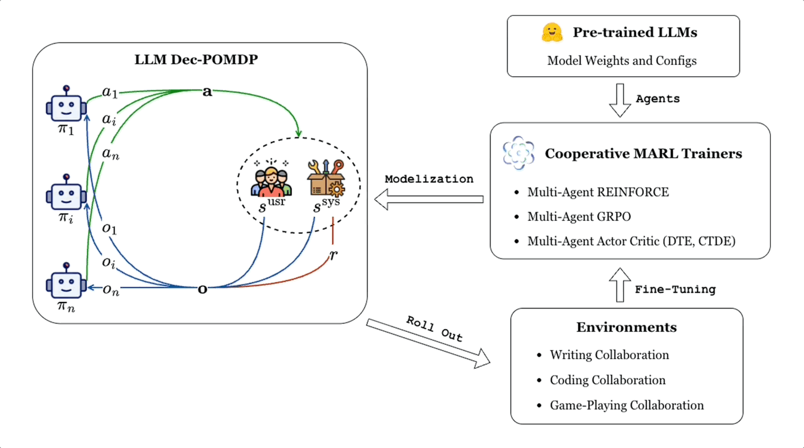
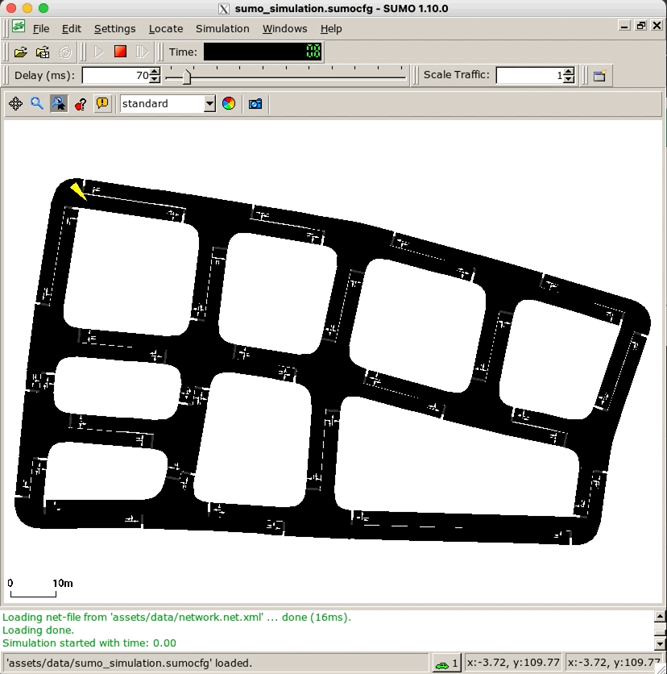
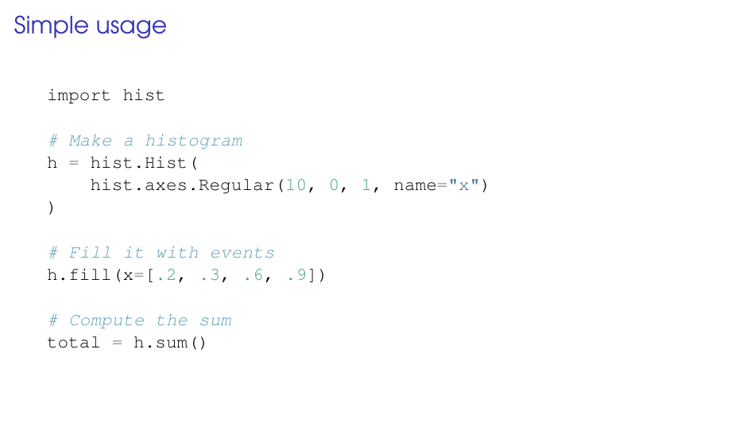

CoMLRL is an open-source library for training multiple LLMs to collaborate using multi-agent reinforcement learning. It provides implementations of MARL algorithms for LLM collaboration and supports a range of environments and benchmarks.

SUMO-Gym is a Gym-style toolkit for developing and benchmarking reinforcement learning methods in SUMO.

Hist is an analysis-oriented histogramming tool built on boost-histogram, the Python bindings for the Boost.Histogram C++ library. It provides plotting tools, convenient shortcuts, and additional features for data analysis.
